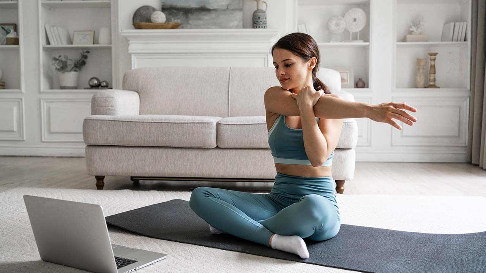
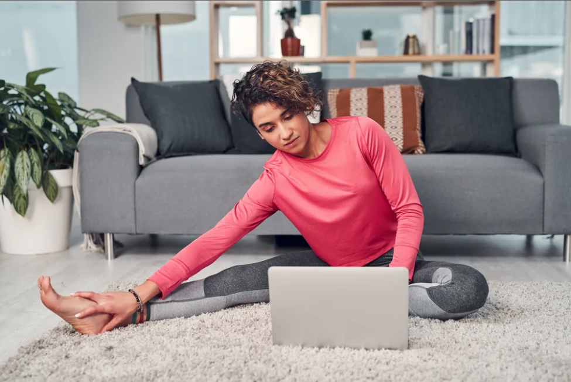

Prática de exercícios em casa virou tendência
Estudo brasileiro avaliou o impacto dos treinos caseiros no sono, ansiedade, depressão e estresse.
01/09/2023 16h31 | Atualizado há 1 dia

Depois de mais de dois anos, alguns hábitos que foram adquiridos ou fortalecidos durante a pandemia de COVID-19
estão em alta. Como exemplo, a atividade física doméstica foi listada como uma das três principais tendências
de fitness em 2023 e deve ser mantida nos próximos anos.
Impactos na saúde mental e no sono

Uma pesquisa da Associação Brasileira de Psiquiatria (ABP) descobriu que as pessoas que fizeram exercícios em casa
pelo menos três vezes por semana relataram menos ansiedade, estresse e depressão do que as pessoas que não fizeram nada.
Perceba que, para que isso fosse relatado, não havia necessidade de uma grande academia de musculação
ou perto de um parque exuberante. O movimento humano dentro de casa com certa regularidade já trouxe
benefícios psicológicos. Portanto, a movimentação do corpo é mais importante do que o local para o
exercício.
A pesquisa realizada durante o isolamento social também afirma que os indivíduos que se mantiveram ativos
fisicamente experimentaram melhores níveis de sono. É sabido, de acordo com Bruno, que a qualidade de vida
depende de um equilíbrio de fatores como saúde física, psicológica, social e ambiental, e não apenas de saúde
ou ausência de doenças. Portanto, na hora de analisar os dados, todos esses elementos devem ser levados em
consideração.
Atividades benéficas para o momento

Ainda hoje, muitas pessoas pensam que ser ativo é apenas fazer esportes ou frequentar uma academia.
No entanto, a APB afirma que qualquer atividade que coloque o corpo em movimento,
desde que seja respeitado o limite de cada pessoa, é válida e benéfica.
O professor de educação física Bruno Teixeira enfatiza exercícios que incluem puxar e empurrar simples
vertical e horizontal, que podem ser feitos em casa durante o distanciamento social. Confira:
Agachamento: com ou sem o suporte de uma cadeira fixa ao solo em base estável;
Levantamento de pesos livres na vertical: (podem ser usados sacos de feijão, arroz, garrafas pet com água etc.);
Flexões ou extensões de cotovelo: basta deitar de barriga para baixo e se manter em quatro apoios (pés e mãos; mais avançado) ou em seis apoios (pés, joelhos e mãos; mais básico);
Exercícios com bandas elásticas: ao prender uma banda elástica embaixo dos pés, por exemplo, é possível, ao segurar as pontas dessas bandas com as mãos, realizar movimentos de flexão de cotovelo, levando as mãos em direção ao ombros e mantendo o cotovelo fixo na lateral do corpo.